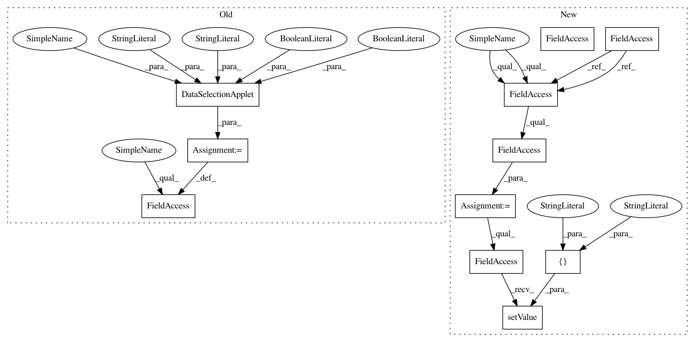

4b35855d4ea461644b8e49caf9679e39ddc4877c,ilastik/workflows/tracking/chaingraph/chaingraphTrackingWorkflow.py,ChaingraphTrackingWorkflow,__init__,#ChaingraphTrackingWorkflow#Any#,13
Before Change
super(ChaingraphTrackingWorkflow, self).__init__(headless=headless, graph=graph, *args, **kwargs)
//// Create applets
self.rawDataSelectionApplet = DataSelectionApplet(self,
"Input: Raw",
"Input Raw",
batchDataGui=False,
force5d=False)
self.dataSelectionApplet = DataSelectionApplet(self,
"Input: Prediction",
"Input Prediction",
After Change
super(ChaingraphTrackingWorkflow, self).__init__(headless=headless, graph=graph, *args, **kwargs)
//// Create applets
self.dataSelectionApplet = DataSelectionApplet(self,
"Input Data",
"Input Data",
batchDataGui=False,
force5d=False)
opDataSelection = self.dataSelectionApplet.topLevelOperator
opDataSelection.DatasetRoles.setValue( ["Raw Data", "Prediction Maps"] )
self.thresholdTwoLevelsApplet = ThresholdTwoLevelsApplet( self,
"Threshold & Size Filter",
"ThresholdTwoLevels" )
In pattern: SUPERPATTERN
Frequency: 3
Non-data size: 11
Instances
Project Name: ilastik/ilastik
Commit Name: 4b35855d4ea461644b8e49caf9679e39ddc4877c
Time: 2013-04-23
Author: bergs@janelia.hhmi.org
File Name: ilastik/workflows/tracking/chaingraph/chaingraphTrackingWorkflow.py
Class Name: ChaingraphTrackingWorkflow
Method Name: __init__
Project Name: ilastik/ilastik
Commit Name: 4b35855d4ea461644b8e49caf9679e39ddc4877c
Time: 2013-04-23
Author: bergs@janelia.hhmi.org
File Name: ilastik/workflows/tracking/chaingraph/chaingraphTrackingWorkflow.py
Class Name: ChaingraphTrackingWorkflow
Method Name: __init__
Project Name: ilastik/ilastik
Commit Name: f2827303da033a8c043334c89b6cceff6993c70a
Time: 2013-05-08
Author: martin.schiegg@iwr.uni-heidelberg.de
File Name: ilastik/workflows/tracking/conservation/conservationTrackingWorkflow.py
Class Name: ConservationTrackingWorkflow
Method Name: __init__
Project Name: ilastik/ilastik
Commit Name: 4b35855d4ea461644b8e49caf9679e39ddc4877c
Time: 2013-04-23
Author: bergs@janelia.hhmi.org
File Name: ilastik/workflows/objectClassification/objectClassificationWorkflowBinary.py
Class Name: ObjectClassificationWorkflowBinary
Method Name: __init__